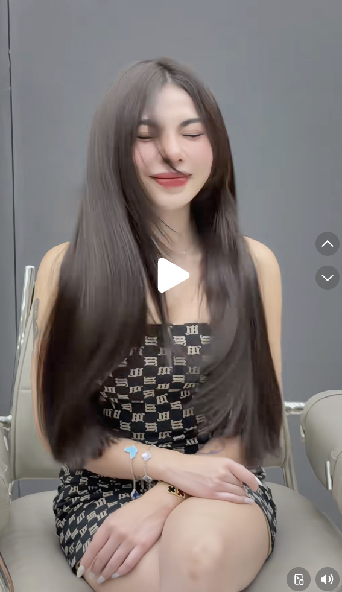

Chiến Lược Video TikTok
Thợ 10 Năm Hải Phòng
Định Dạng 15s Chuyển Đổi Cao
No-Voice / Fast-Paced
TOÀN CẢNH CHIẾN LƯỢC XÂY KÊNH & BẢNG PHÂN CẢNH STUDIO (15s)
Bóc tách toàn diện: Phong cách, Đóng gói sản phẩm, Đòn bẩy tâm lý Mẫu Xinh (Halo Effect), Setup Studio tối giản và 2 Mẫu kịch bản 15s Zoom-cut chuẩn TikTok.
📋 BẢNG CHECKLIST QUẢN TRỊ CÔNG VIỆC THỰC THI
- ✓ Mục 1: Xác lập Định vị Phong cách & Output Đóng gói Sản phẩm (Khai thác lõi 10 năm kinh nghiệm).
- ✓ Mục 2: Giải mã Thông điệp ngầm & Bóc trần Đòn bẩy tâm lý "MẪU XINH" (Halo Effect & Beauty Projection).
- ✓ Mục 3: Hướng dẫn Setup Studio tối giản, thực chiến ngay tại Salon (Đèn, Ghế, Background, Quạt gió).
- ✓ Mục 4: Phân tích Ảnh tham chiếu mới nhất & Các động tác kích thích thị giác (Tactile Triggers).
- ✓ Mục 5: Tối ưu 2 Kịch bản 15 Giây Tiêu Chuẩn (Không thoại - Chỉ Zoom-cut + Khớp nhạc + Chữ ngắn - Dễ làm trong 1 phút sau khi làm tóc cho khách).
💎 1. PHONG CÁCH & OUTPUT ĐÓNG GÓI SẢN PHẨM (LÕI 10 NĂM)
✨ 1.1. Phong cách kênh (Visual & Vibe)
Clean Luxury / Tiêu Chuẩn Salon Cao Cấp:
- Không ồn ào, không diễn tiểu phẩm drama nhảm, không giật tít sốc.
- Hình ảnh sạch sẽ, hiện đại, tone màu ấm/xám sang trọng, bắt sáng mượt mà.
- Nhạc nền: Trend Acoustic nhẹ nhàng, Beat thời trang, Lofi hoặc nhạc khớp tiếng kéo/đánh bass.
📦 1.2. Output Đóng gói sản phẩm
Lõi: Tay nghề 10 năm xử lý cấu trúc tóc & tỉ lệ mặt
- Gói 1: "Layer Thăng Hạng Nhan Sắc" → Cắt ôm gò má, cằm V-line, che khuyết điểm mặt to/vuông.
- Gói 2: "Sóng Lơi Lười Sấy (Lazy Waves)" → Uốn giữ nếp tự nhiên, về nhà sấy tay không 100% vẫn vào sóng.
- Gói 3: "Duỗi / Nhuộm Phục Hồi Ánh Gương" → Tóc bóng khỏe, suôn mượt như tơ lụa.
🎯 Thông điệp Output (Core Message): "Tại đây, bạn không chỉ mua một mái tóc đẹp khi ở tiệm, mà mua một diện mạo sang trọng, trẻ trung và về nhà tự sấy vẫn đẹp như ở tiệm."
🧠 2. NỖI SỢ CỦA PHỤ NỮ & ĐÒN BẨY TÂM LÝ "MẪU XINH" (HALO EFFECT)
⚠️ Nỗi sợ bản năng lớn nhất của chị em khi đi làm tóc:
- Sợ BỊ PHÁ TÓC: Thợ cắt ngắn cụt lủn, làm mất dáng tóc quen thuộc phải nuôi lại cả năm.
- Sợ BỊ GIÀ: Uốn xoăn tít biến thành "bà thím".
- Sợ BỊ "TREO ĐẦU DÊ BÁN THỊT CHÓ": Ở tiệm sấy lô đẹp ảo ma, về nhà gội đầu xong thành "tổ quạ".
⚡ Bóc trần Đòn bẩy tâm lý: "MẪU XINH, TRẺ, ĂN MẶC ĐẸP"
Anh đã quan sát cực kỳ chuẩn xác: Yếu tố "Mẫu xinh, dáng đẹp, trang phục có gu" chính là 60% động cơ kích thích mua hàng!
1. Hiệu ứng Hào quang (Halo Effect):
Khi người xem thấy một cô gái xinh đẹp, tươi tắn, mặc đồ sành điệu ngồi trên ghế salon, não bộ tự động gán nhãn: "Tiệm này đẳng cấp, thợ này có gu thẩm mỹ cao, làm tóc cho toàn người đẹp."
2. Tâm lý Đồng hóa bản thân (Beauty Fantasy Projection):
Phụ nữ khi xem video không chỉ nhìn sợi tóc, họ nhìn "Hình ảnh lý tưởng của chính họ". Họ vô thức tin rằng: "Nếu mình cắt kiểu này ở đây, mình cũng sẽ toát ra thần thái xinh đẹp và cuốn hút như cô ấy."
💡 Kinh nghiệm tuyển chọn mẫu quay cho tiệm Hải Phòng:
Trong 10-20 khách làm tóc mỗi tuần, hãy chọn ra 2-3 bạn nữ có gương mặt ưa nhìn, da sáng, nụ cười duyên. Tặng voucher giảm giá 20-30% hoặc tặng chai tinh dầu dưỡng để xin phép quay clip 1-2 phút sau khi làm xong!
🎬 3. SETUP GÓC QUAY STUDIO TỐI GIẢN TẠI SALON (1 GÓC DUY NHẤT)
🪑 1. Ghế & Background
- 01 Ghế cắt xoay: Da màu xám khói, be hoặc đen tối giản, tay vịn kim loại sáng bóng.
- Phông nền: Tường sơn màu xám xi măng, xám tro hoặc be trơn. Tuyệt đối dọn sạch dây điện, chổi, khăn lau.
💡 2. Hệ thống Ánh Sáng
- Key Light (Đèn trước): 01 Softbox bát giác 90cm đặt trước mặt 45° để da mẫu mịn màng, mắt có catchlight.
- Backlight (Đèn ven sau): 01 Đèn chiếu từ sau gáy lên tóc giúp sợi tóc óng ả, tách khỏi nền tối.
💨 3. Đạo cụ Visual
- 01 Quạt gió mini / Máy sấy gió thoảng: Thổi nhẹ từ dưới lên hoặc ngang để tóc bay lả lướt tự nhiên.
- Điện thoại: iPhone quay chế độ 4K 60fps hoặc Cinematic Mode.
📸 4. PHÂN TÍCH ẢNH THAM CHIẾU MỚI NHẤT & CÁC HÀNH ĐỘNG GÂY CHÚ Ý

Ảnh Chụp Màn Hình Mới Nhất
Mẫu tóc Suôn Mượt - Bay Tự Nhiên (Clean-Girl Aesthetic)
🔹 Bố cục: Góc máy tĩnh chính diện (Front Medium Close-up), nhân vật ngồi giữa khung hình 9:16.
🔹 Visual Triggers (Hành động gây chú ý cực mạnh):
- Lắc đầu nhẹ / Tóc bay: Sợi tóc tách rời bay nhẹ tạo cảm giác suôn mềm, không bết dính.
- Biểu cảm mãn nguyện: Mắt nhắm nhẹ mỉm cười tự tin → Truyền năng lượng tích cực, khiến người xem cảm thấy mái tóc mang lại hạnh phúc.
- Trang phục & Phụ kiện: Áo cúp ngực họa tiết sang trọng, vòng tay bạc tinh tế → Tôn trọn bờ vai và chiều dài mái tóc suôn mượt.
⚡ 5. HAI MẪU KỊCH BẢN 15 GIÂY TIÊU CHUẨN (NO-VOICE / ZOOM-CUT / CHỮ CHỐT BOOKING)
📌 Nguyên tắc thực hiện siêu nhanh cho chủ tiệm:
Chỉ mất đúng 60 giây sau khi sấy tóc xong cho khách để quay 4 đúp ngắn bằng iPhone. Về chỉ cần ghép 4 đúp theo nhịp nhạc, chèn 3 dòng chữ là xong 1 video viral!
1 MẪU 1: "THĂNG HẠNG NHAN SẮC MẶT TRÒN → V-LINE" (15 Giây)
Mục tiêu: Kéo khách cắt Layer + Uốn
| Thời gian |
Cỡ cảnh & Động tác máy |
Hành động nhân vật & Visual Trigger |
Chữ hiển thị (Typography) |
| 00 - 03s |
Medium Shot (Zoom-in nhanh) |
Mẫu ngồi thẳng, tóc rơi trước ngực, nhìn thẳng vào camera rồi chớp mắt mỉm cười duyên. |
MẶT TRÒN CẮT GÌ CHO SANG?
Font Bold - Nền đen viền trắng |
| 03 - 07s |
Close-up 45° (Zoom-cut) |
Thợ tóc đưa 2 bàn tay luồn từ gáy nâng bổng lọn tóc lên rồi buông tay để tóc nảy sóng rơi xuống. |
LAYER BAY THON GỌN GƯƠNG MẶT |
| 07 - 11s |
Cận cảnh sợi tóc (Slow-mo 60fps) |
Mẫu nghiêng đầu sang trái/phải, ngón tay vén nhẹ lọn tóc mái bay ôm lấy gò má. Quạt gió thổi tóc bay nhẹ. |
UỐN SÓNG LƯƠI SẤY TAY 100% |
| 11 - 15s |
Medium Close-up (Khớp beat kết) |
Mẫu cười rạng rỡ, tay vuốt đuôi tóc. Camera giật nhẹ theo beat nhạc cuối. |
📍 SALON HẢI PHÒNG - INBOX ĐẶT LỊCH |
2 MẪU 2: "CHẤT TÓC BÓNG MƯỢT ÁNH GƯƠNG / HỒI SINH TÓC" (15 Giây)
Mục tiêu: Kéo khách Duỗi / Phục hồi / Nhuộm
| Thời gian |
Cỡ cảnh & Động tác máy |
Hành động nhân vật & Visual Trigger |
Chữ hiển thị (Typography) |
| 00 - 03s |
Cận cảnh lưng/vai (Tilt-down) |
Thợ dùng lược răng thưa chải 1 đường từ đỉnh đầu xuống ngọn, lược lướt êm ru không một sợi rối. |
TỪNG BỊ TÓC CHÁY KHÔ XƠ? |
| 03 - 07s |
Góc chính diện (Zoom-cut) |
Mẫu lắc nhẹ 2 vai sang 2 bên, toàn bộ mái tóc suôn mượt đung đưa óng ánh dưới ánh đèn studio. |
PHỤC HỒI ĐA TẦNG ÁNH GƯƠNG |
| 07 - 11s |
Cận cảnh bàn tay |
Mẫu đưa bàn tay vuốt ngược từ sau ra trước, các ngón tay lướt qua sợi tóc bóng khỏe. |
MỀM MƯỢT NHƯ TƠ LỤA |
| 11 - 15s |
Medium Shot (Full thần thái) |
Mẫu nở nụ cười tự tin, xoay nhẹ người 30 độ nhìn vào gương. |
✨ TỰ TIN XUỐNG PHỐ - GHÉ TIỆM NGAY |
🚀 6. QUY TRÌNH SẢN XUẤT 3 BƯỚC "LÀM XONG LÀ CÓ CLIP"
1️⃣ Bước 1: Chọn Khách & Xin Phép (30s)
Khách nữ xinh xắn làm tóc xong ưng ý → Mời sang "Ghế Studio": "Em ơi tóc xinh quá, anh xin 1 phút quay clip ngắn lưu kỷ niệm nhé!"
2️⃣ Bước 2: Bấm Máy 4 Shot (60s)
Bật đèn studio + quạt mini. Quay 4 đúp: 1 đúp chính diện, 1 đúp luồn tay, 1 đúp mẫu lắc tóc, 1 đúp mẫu cười vuốt tóc.
3️⃣ Bước 3: Dựng CapCut Siêu Tốc (3 phút)
Nhập 4 clip vào CapCut, chọn nhạc trend TikTok, cắt mỗi đoạn 3-4s đúng nhịp trống, gõ 3 dòng text mẫu ở trên → Xuất video!